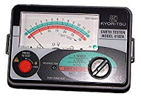

避雷針工事
建物を落雷から保護するための避雷針の設置・点検・維持管理を行う工事。設置高さや接地抵抗の基準に基づき施工。
避雷針工事は避雷針を取り付ける電気工事のことです。建築基準法に照らし合わせて5階未満の住宅ならば設置義務はまず発生しません。また、周囲に高層ビルやマンションがあるならば、一戸建てには落雷のリスクはほとんどないといわれています。しかし、高台や周囲に高い建物がまったくない開けた場所に建っている場合には、一戸建てにも避雷針を付けた方が良い場合もあります。
避雷針とは
避雷針とは建物を落雷から保護するための仕組みのことです。地面と地中の電位差を少なくして落雷のリスクを軽減し、落雷の際には電流を地面へ流すことで建物への被害を防いでいます。保護対象となる建物の先端に取り付けられる棒状の導体です。
避雷針工事の重要性
建築基準法では高さ20m以下の建築物には避雷針の設置義務は発生しません。しかし、20mに満たない建物が絶対に落雷しないという保障はありません。特に日本は雷が多く、万が一の落雷で思わぬ大きな被害を受ける例もあります。たとえば、周囲に高い建物がまったくない場合、平均的な一戸建てに雷が落ちることもあります。特に次のような場合は避雷針工事を検討した方が良いでしょう。
- 煙突やアンテナなどの突起物がある
- 雷が多いエリアに建っている
- 山や丘陵の頂上、頂上付近に建っている
避雷針工事の判断基準
一戸建てでも、下記の国土交通省監修による建築設備計画基準で36～38に達したならば、避雷針工事を行うのが望ましいとされています。
| 項目 | 指数 |
|---|---|
| 屋根が金属ではない鉄筋コンクリート造 | 2 |
| 金属・草葡以外の屋根で、煉瓦・コンクリート・石造 | 4 |
| 金属屋根でなおかつ金属枠で囲われているか鉄筋コンクリート造 | 5 |
| 金属・草葡以外の屋根で、木材枠または壁 | 7 |
| 木材枠の金属屋根で、煉瓦・コンクリート・石造 | 8 |
| 草葡屋根 | 10 |
| 同じ程度の高さの建築物・樹木が幅範囲に存在 | 2 |
| 周囲に同じ程度の高さの建築物・樹木が2～3存在 | 5 |
| 完全に孤立・周囲建築物や樹木の2倍以上の高さ | 10 |
| 平坦な地方 | 2 |
| 丘陵地帯 | 5 |
| 標高300～900mの山岳地帯 | 8 |
| 標高900m以上の山岳地帯 | 10 |
| 建物の高さが9m以下 | 2 |
避雷針工事の工程
避雷針工事は次のような工程で施工されます。
接地工事
避雷針は落雷時に大きな電流を受けますが、それを地面に埋めた銅板などに流すことで建物を守ります。設置工事では、銅板などの接地抵抗値を10Ω以下と非常に小さくしなければならず、電気工事に関する十分な技術と経験が必要です。
避雷針設置
避雷針を設置します。一戸建てでは基本的に屋根の先端部分に取り付けます。
アース線配線工事
避雷針が受ける大電流に耐えうるアース線を、避雷針本体から引き下げて、地中に埋めた銅板などに接続します。
接地抵抗測定
接地抵抗計（アーステクター）を使って接地抵抗値を測定します。正しい数値を確認できたら、避雷針工事の完了です。
避雷針の耐用年数
避雷針にも定期的なメンテナンスが必要です。避雷針は何度か落雷があった物と、まったく落雷がなかった物では消耗度は異なります。接地部分が劣化していないか、アース線が断絶していないかなど、定期的な点検作業を行わなくてはいけません。いずれにせよ、耐用年数は15～20年といわれています。古くなった避雷針を撤去して、新しい避雷針を設置することも、避雷針工事の一種なのです。